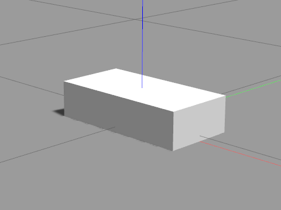
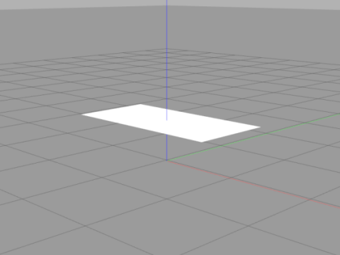
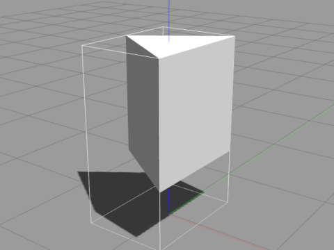
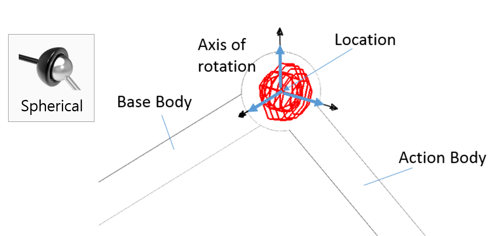
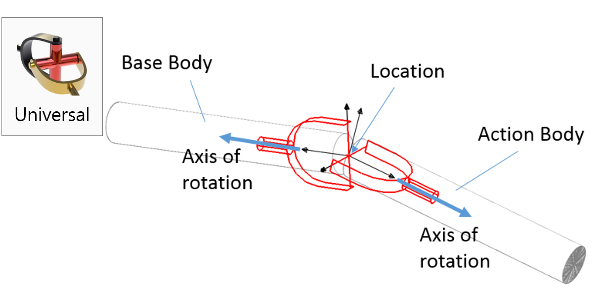
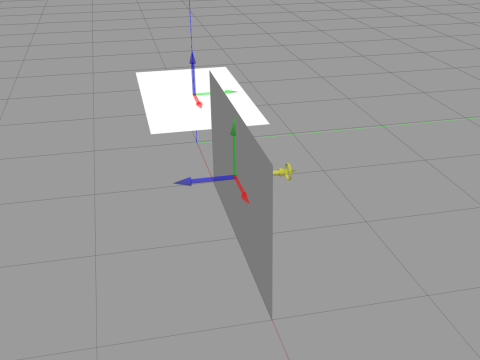
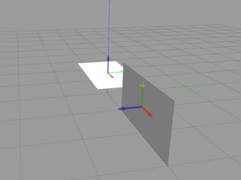

SDF与URDF
物理引擎
物理引擎中的碰撞问题：
- 模型（
<model>）与模型之间：通过<collision>定义的形状进行碰撞检测 - 模型内的
<link>之间：- 需要将
<model>中的<self_collide>tag设置为true，应用于所有link - 对于每个link可以单独配置
<self_collide>（覆盖全局配置） （参见Link）
- 需要将
- 为了实现碰撞检测，
<collision>应带有参数<collision name="...">
标签
Model
- 一个SDF文件中只能包含一个
<model> <model>内部可以嵌套<model>，即Nested ModelAs of SDF 1.5, the <model> SDF element has been extended to support self-referencing, which means allowing <model> elements to be nested.
<static><self_collide>：模型内link是否碰撞If set to true, all links in the model will collide with each other (except those connected by a joint). Can be overridden by the link or collision element self_collide property. Two links within a model will collide if link1.self_collide OR link2.self_collide. Links connected by a joint will never collide.
Link
- Pose:
- @relative_to：默认的坐标系为这个link的父节点的坐标系。
- 旋转的表示方式默认为
，默认单位为radians
<gravity><self_collide>：设置为true将同一个模型的link间碰撞纳入仿真- 默认为false，两个link中有任意一个设置为true即会进行判定。
- 若两个link通过关节相连则不会产生碰撞
If true, the link can collide with other links in the model. Two links within a model will collide if link1.self_collide OR link2.self_collide. Links connected by a joint will never collide.
- 惯性参数设置
- This element is also a subelement of the link object.
- The mass is defined in kilograms.
- The 3x3 rotational inertia matrix is specified with the inertia element. Since this is symmetrical, it can be represented by only 6 elements, as such.
- 惯性参数：
- 因为矩阵具有对称性，因此只需6个参数。为0的参数也需要填写。
- Adding Physical and Collision Properties to a URDF Model
- List of moments of inertia
- 惯性的参照系原点为link的质心
The origin of the inertial reference frame needs to be at the center of gravity. The axes of the inertial reference frame do not need to be aligned with the principal axes of the inertia
Geometry
empty
box
- 示例
中心为物体中心（pose设置为0 0 0.05 0 0 0） 
<visual name="box"> <geometry> <box> <size>.4 .2 .1</size> </box> </geometry> </visual>
cylinder
- 示例
<cylinder> <radius>1</radius> <length>1.2</length> </cylinder>
heightmap
- 依据2D灰度图创建高度图heightmap
- image：依据2D灰度图创建一系列的box
mesh
plane：
- 平面，给定法向量方向和长宽
中心为平面中心，下图为pose定义在
<plane> <normal>0 0 1</normal> <size>2 1</size> </plane>0 0 0.5的平面 
polyline：
- 示例：边长为1的等边三角形拉伸
中心为定义的polyline围成的形状的中心，参数height为从平面上拔高 
<polyline> <point>0.2887 -0.5</point> <point>0.2887 0.5</point> <point>-0.4330 0</point> <height>1</height> </polyline>
sphere
- 示例
<sphere> <radius>1</radius> </sphere>
材质
- 指定材质（颜色）
<visual name="triangle"> <geometry> <polyline> <point>-0.5 -0.5</point> <point>-0.5 0.5</point> <point>0.5 0.5</point> <point>0 0</point> <point>0.5 -0.5</point> <height>1</height> </polyline> </geometry> <material> <script> <uri>file://media/materials/scripts/gazebo.material</uri> <name>Gazebo/Red</name> </script> </material> </visual>
Joint 关节
示例
- Demo: Demo Joint Types By OpenRobotics（[本地备份](zz.attachment/Demo Joint Types.zip)）
- Github(https://github.com/osrf/gazebo_models/blob/master/demo_joint_types/model.sdf)
关节种类
- 参考文档
continuous
- （v1.9）：如车轮的轮轴
revolute
- 如机械臂的有运动范围限制的旋转关节
gearbox
revolute2
- 两个串联旋转关节
如在y轴上和z轴上都可以独立对关节进行驱动
- 需要定义
<axis>和<axis2>
- 需要定义
prismatic
- 线性关节
球形关节ball：
- 球形关节3DOF(例：y轴，z轴，旋转) 
<axis>，无驱动，只会随动？
screw：
万向节universal
- 2DOF？
like a ball joint, but constrains one degree of freedom
- 可以设定
<axis>和<axis2>为， ， 中的任意两个进行驱动（需要进行更多的测试）  - 存在问题？Revolute2 vs Universal joint?
On further inspection, it seems like Gazebo isn’t even implementing a universal joint properly. A universal joint, according to both it’s mechanical definition and ODE’s implementation, should not allow rotation between the parent and child links. The joint should allow “bending” between the child and parent links, but not “rotation” between them. In Gazebo’s “Demo Joint Types” model, you can see the universal joint is not behaving properly, especially if you visualize joints and slow it down. pcdangio gravatar imagepcdangio ( Jan 7 ‘1 )
- 不能设置damping？
- 存在问题？Revolute2 vs Universal joint?
铆定fixed：
- 即使设定了
<axis>也不会被应用于模型?
关节的动力学
- Adding Physical and Collision Properties to a URDF Model
- friction - The physical static friction. For prismatic joints, the units are Newtons. For revolving joints, the units are Newton meters.
- damping - The physical damping value. For prismatic joints, the units are Newton seconds per meter. For revolving joints, Newton meter seconds per radian.
其它标签tag
<use_parent_model_frame>(v1.5)：假设旋转轴设定为y(<xyz>0 1 0</xyz>)- 此参数为true时（黄色为旋转轴）： 
- 此参数为false时： 
<pose>的坐标系：和<child>的坐标系一致<axis>的坐标系(1.5版本可能和1.9版本不一致？)- 默认以
<child>的坐标系为准- SDF 1.5:
The axis is expressed in the joint frame unless the use_parent_model_frame flag is set to true.<use_parent_model_frame>
- SDF 1.9:
The axis is expressed in the joint frame unless a different frame is expressed in the expressed_in attribute. The vector should be normalized.<expressed_in>
- SDF 1.5:
- 官方示例（SDF 1.9+,
<sdf version='1.4'>）中joint的axis给的为<xyz>0 1 0</xyz>。实际测试中会导致圆盘一直翻动（SDF 1.5），应改为<xyz>0 0 1</xyz>。测试中发现转轴的坐标系以<child>所指定的物体为准。示例中的<child>为left_wheel（或者右侧轮）。在定义link时其角度经过翻转，先以z（yaw）作为转动轴旋转90°，然后以旋转后的坐标系中的y（pitch）作为转动轴旋转90°。得到新的坐标系，即joint axis对应的坐标系。 - 另一种解决方案为
将使用parent model（chassis）的坐标系<axis> <xyz>0 1 0</xyz> <use_parent_model_frame>true</use_parent_model_frame> </axis>- 默认以
其他
官方示例解析
- 范例代码
<?xml version='1.0'?> <sdf version='1.5'> <model name="my_robot"> <static>false</static> <link name='chassis'> <pose>0 0 .1 0 0 0</pose> <collision name='collision'> <geometry> <box> <size>.4 .2 .1</size> </box> </geometry> </collision> <visual name='visual'> <geometry> <box> <size>.4 .2 .1</size> </box> </geometry> </visual> <collision name='caster_collision'> <pose>-0.15 0 -0.05 0 0 0</pose> <geometry> <sphere> <radius>.05</radius> </sphere> </geometry> <surface> <friction> <ode> <mu>0</mu> <mu2>0</mu2> <slip1>1.0</slip1> <slip2>1.0</slip2> </ode> </friction> </surface> </collision> <visual name='caster_visual'> <pose>-0.15 0 -0.05 0 0 0</pose> <geometry> <sphere> <radius>.05</radius> </sphere> </geometry> </visual> </link> <link name="left_wheel"> <pose>0.1 0.13 0.1 0 1.5707 1.5707</pose> <collision name="collision"> <geometry> <cylinder> <radius>.1</radius> <length>.05</length> </cylinder> </geometry> </collision> <visual name="visual"> <geometry> <cylinder> <radius>.1</radius> <length>.05</length> </cylinder> </geometry> </visual> </link> <link name="right_wheel"> <pose>0.1 -0.13 0.1 0 1.5707 1.5707</pose> <collision name="collision"> <geometry> <cylinder> <radius>.1</radius> <length>.05</length> </cylinder> </geometry> </collision> <visual name="visual"> <geometry> <cylinder> <radius>.1</radius> <length>.05</length> </cylinder> </geometry> </visual> </link> <joint type="revolute" name="left_wheel_hinge"> <pose>0 0 -0.03 0 0 0</pose> <child>left_wheel</child> <parent>chassis</parent> <axis> <xyz>0 1 0</xyz> </axis> </joint> <joint type="revolute" name="right_wheel_hinge"> <pose>0 0 0.03 0 0 0</pose> <child>right_wheel</child> <parent>chassis</parent> <axis> <xyz>0 1 0</xyz> </axis> </joint> </model> </sdf>